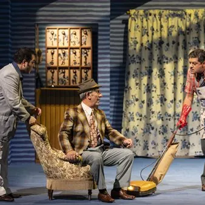

mar 1 dic · dalle 20:45
ERT FVG Stagione teatrale 2026-27: Il medico dei pazzi
Di Eduardo Scarpetta regia e adattamento di Leo Muscato con Gianfelice Imparato e con Luigi Bignone, Giuseppe Brunetti, Francesco Maria Cordella Alessandra D’Ambrosio, Antonio Fiorillo, Giorgio Pinto, Giuseppe Rispoli, Fabiana Russo, Ingrid Sansone e Michele Schiano Di Cola In…
 Indicazioni
Indicazioni
- Costi e prenotazioni
- Costo non indicato · Prenotazione non indicata
- Programma
- Programma da verificare. Apri la fonte ufficiale per orari e possibili aggiornamenti.
- In caso di maltempo
- Nessuna indicazione specifica pubblicata.
- Note
- Acquisito automaticamente dalla fonte.
L’EVENTO
Descrizione completa
Di Eduardo Scarpetta
regia e adattamento di Leo Muscato
con Gianfelice Imparato e con Luigi Bignone, Giuseppe Brunetti, Francesco Maria Cordella
Alessandra D’Ambrosio, Antonio Fiorillo, Giorgio Pinto, Giuseppe Rispoli, Fabiana Russo, Ingrid Sansone e Michele Schiano Di Cola
In occasione del centenario della morte di Eduardo Scarpetta, Leo Muscato porta in scena una nuova versione de Il medico dei pazzi , una delle più celebri e divertenti farse del grande autore napoletano. Scritta nel 1908, la commedia racconta la disavventura di Don Felice Sciosciammocca, ingenuo proprietario terriero convinto di aver finanziato gli studi di medicina del nipote Ciccillo. Quando decide di raggiungerlo a Napoli per vedere con i propri occhi la clinica che avrebbe aperto, scopre invece una realtà ben diversa. Per salvarsi dalle conseguenze delle sue menzogne, il nipote trasforma la pensione in cui vive in un fantomatico istituto psichiatrico. Don Felice, osservando gli eccentrici ospiti della struttura, è convinto di trovarsi davvero in mezzo a pazienti affetti dalle più svariate forme di follia. Da qui prende avvio una vertiginosa macchina di equivoci che ha reso questa commedia uno dei grandi classici del teatro italiano. Nella rilettura di Leo Muscato l’azione viene spostata agli inizi degli anni Ottanta, poco dopo l’approvazione della Legge Basaglia che sancì la chiusura dei manicomi e l’avvio di una nuova concezione della salute mentale. In questo contesto storico, segnato da trasformazioni profonde e da forti resistenze culturali, la farsa acquista nuove sfumature e si trasforma in una commedia che osserva con ironia e umanità il confine sottile tra normalità e follia. La Pensione Stella diventa così il luogo in cui si incontrano personaggi fragili, stravaganti e profondamente umani: un aspirante Otello incapace di sostenere il ruolo che sogna, un musicista geniale ma squattrinato, un ex vigile urbano licenziato e abbandonato dalla moglie, uno scrittore che distrugge ogni pagina che scrive, una madre ingombrante in cerca di marito per la figlia e un direttore disperatamente impegnato a mantenere l’ordine. Tra comicità, tenerezza e malinconia, Don Felice attraversa la giornata più assurda della sua vita fino a scoprire di essere forse lui stesso il più ingenuo e disarmato tra tutti. scene di Federica Parolini
costumi di Silvia Aymonino
luci di Alessandro Verazzi
musiche originali di Andrea Chenna produzione: I Due della Città del Sole, Teatro di Napoli – Teatro Nazionale, Compagnia Mauri Sturno
IL PROGRAMMA
Programma e orari
Appuntamenti raccolti dalle fonti elencate. Dove manca un orario, non è ancora disponibile in questa scheda.
Programma pubblicato
- Dal 2026-12-01 al 2026-12-01
INFORMAZIONI UTILI
Prima di partire
- Controllare la fonte prima di partire.
ORGANIZZAZIONE